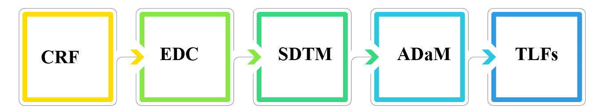

Lesser-known but crucial role - Statistical Programmer
🔁 什麼是統計程式設計師 | What is a Statistical Programmer (SP)
在臨床試驗的過程中，統計程式設計師負責將試驗數據依照規範整理成可以解釋且適合報告呈現的格式。這裡所說的「規範」，包含審查主管機關（例如：FDA、EMA）所要求的提交規格、CDISC 制定的標準（如 SDTM、ADaM、define.xml），以及公司內部的作業規範。
In clinical trials, Statistical Programmers are responsible for organizing trial data according to predefined standards, transforming it into interpretable and report-ready formats. These “standards” include regulatory submission requirements (such as those from the FDA and EMA), CDISC-defined structures like SDTM, ADaM, and define.xml, as well as internal company-specific guidelines.
這個問題，其實是身為統計程式設計師向身旁親友解釋工作內容時，最難說明的一部分，因為很容易與 Data Management、Statistician 等職務混淆。不過也正因如此，統計程式設計師與 Data Management、Statistician 的工作確實經常密不可分。
This is often one of the most difficult aspects for Statistical Programmers to explain to friends and family, as it is easily confused with roles like Data Management or Statistician. However, this overlap also highlights how closely intertwined these roles truly are.
我在臨床試驗領域擔任統計程式設計師超過十年的時間，待過兩間大型 CRO 公司與兩間藥廠。以下我將簡單分享一些從自己角度出發，對這份工作內容與價值的觀察與理解。
I have worked as a Statistical Programmer in the clinical trial field for over ten years, across two large CRO companies and two pharmaceutical firms. In the following sections, I’ll share my perspective on the nature and value of this profession based on my own experiences.
🔁 Statistical Programmer 在做什麼 | What Does a Statistical Programmer Actually Do
先前擔任面試主管的時候，常會聽到面試者提到 CDISC。CDISC 是什麼呢？簡單來說，是針對臨床數據制定相關交換與整理標準的組織。而其中 SDTM、ADaM 的標準化規範與建議就是由 CDISC 制定出來的。這其實就是 SP 核心工作的重要標準之一。
When I previously served as an interview manager, I often heard candidates mention CDISC. So, what exactly is CDISC? Simply, it is an organization that defines data exchange and standardization frameworks for clinical trial data. The well-known SDTM and ADaM standards were established by CDISC - and these are among the key foundations of a Statistical Programmer’s role.
CDISC 是我非常喜歡的單位之一，因為臨床原始數據其實是非常多元的。這個組織針對臨床試驗各階段的數據進行標準化整理，讓資料在整理、分析、以及提交方面更具效率。
CDISC is one of my favorite organizations, because clinical raw data is inherently diverse and complex. By applying standardized structures to each phase of a clinical trial, CDISC enables much more efficient data organization, analysis, and regulatory submission.

以一般的流程來說，當臨床數據依照 CRF（Case Report Form）進行收集至 EDC（Electronic Data Capture）系統後，SP 將依照案子的進度與需求，開始進行 SDTM 數據集的程式編寫。同時間，也會與相關部門，例如統計與醫學部門，確認統計分析的內容後，開始進行 ADaM 及 TLF（Table, Listing, Figure）的準備。
In a general workflow, once clinical data is collected by CRFs (Case Report Forms) and entered into the EDC (Electronic Data Capture) system, SPs begin programming the SDTM datasets based on the project timeline and needs. At the same time, they collaborate with key departments - such as statisticians and medical reviewers - to confirm the analysis plan and begin developing ADaM datasets and generating TLFs (Tables, Listings, and Figures).
回憶自己剛進這領域時，那時候的部門分工十分細，SDTM 與 ADaM+TLF 是由不同的 SP 團隊負責。我一開始是在負責 ADaM+TLF 的團隊，當時第一個主要任務是 ADLB 數據集。由於數量龐大、分析方法複雜，程式每次執行都要耗時 4～5 小時。
Looking back to when I first entered the field, the departments were highly specialized - separate teams handled SDTM and ADaM+TLF. I started in the ADaM+TLF team, and my first major task was the ADLB (laboratory) dataset. Due to its size and the complexity of the analysis methods, each run of the program would take 4 to 5 hours.
記得那時候團隊常常一起晚餐後又一起加班，就這樣持續了幾個月，最後順利完成 Sponsor 的需求，接著也推進至 define.xml 的製作。對當時年資還不到一年的我來說，能接觸這樣的任務實屬難得，哈哈。
I remember how the team often stayed late after dinner to keep working together. After several months, we successfully met the sponsor’s expectations and moved on to preparing define.xml. At the time, I had less than one year of experience, so being involved in such tasks was rare - and rewarding - for a junior SP.
雖然第一年的 SP 生活讓我吃盡苦頭，不過在當時 mentor 和團隊的帶領下，也讓我更快打下 SP 生涯的重要基礎。
Although that first year as a Statistical Programmer was filled with challenges, the guidance of my mentor and the support of the team helped me quickly build a solid foundation in this career.
✨ SP 與現在的臨床試驗 | Statistical Programmers in Today’s Clinical Trials
剛入行時，SP 工作多數以 SAS 為主要的常用程式語言。SAS 是一項非常穩定的工具，我認為最強大的部分是它背後的支持公司資源。即使遇到 SAS 本身的技術問題，也會有專業團隊協助解決；另外，由於這是臨床試驗領域長久以來所使用的語言，可供參考的程式範例非常豐富，這也是至今 SAS 擁有不可撼動地位的原因之一。
When I first entered the field, SAS was the dominant programming language for Statistical Programmers. It is a highly stable tool, and in my view, its greatest strength lies in the robust support from the company behind it. Even when technical issues arise, professional support teams are available to help. Moreover, as SAS has been widely used in clinical trials for decades, it offers an abundance of reference programs — one of the key reasons for its long-standing, unshakable position in the field,
印象中，從 2018 年開始，我開始有機會參與公司外的研討會，open-source tool 相關的分享已經很多，例如：R、Python。這是非常好的現象，代表整個臨床試驗領域正在不斷思考與進步。對我來說，這些工具不應該被用來與 SAS 相互比較或競爭，而是提供給使用者（例如 SP）更多協作的可能性與思考的空間。
I recall that starting around 2018, I had the opportunity to attend external conferences, and there were already many discussions around open-source tools like R and Python. This is a very positive trend - it shows that the clinical trial industry is continuously evolving and open to new ideas. Personally, I don’t see these tools as competitors to SAS. Rather, they offer more collaborative options and new perspectives for users like Statistical Programmers.
💡 至於什麼是現在 SP 的利器 | What Are the Current Must-Have Skills for SPs
如果由我來回答，我會列舉以下幾點：
If I were to answer this question, here are the capabilities I consider essential:
🧩理解當下所進行的任務: SP 經手許多任務也常會跟其他部門合作, 理解當下任務的原由除了可以幫助維持正確達成目標外, 也可以適時提出更合適的解決方案
Understanding the task at hand: SPs handle various tasks and frequently collaborate with other departments. Understanding the purpose behind the current task not only helps ensure that the objectives are met correctly, but also allows SPs to propose more appropriate solutions when needed.
🧩維持高品質的產出: 臨床試驗直接關乎人體生命，是一份需要審慎對待的工作；若因品質不佳而多次修改，將直接影響案子的整體時程
Delivering high-quality outputs: Clinical trials involve human lives, and this work must be approached with great care. Poor quality that requires repeated revisions can directly delay project timelines.
🧩熟悉常規工作的技能: 了解每個常規步驟，並高效率完成工作，是降低風險與提升穩定性的關鍵
Mastering routine tasks: Understanding each standard step and performing them efficiently helps reduce risk and ensure consistent deliverables.
🧩維持思考與拓展視野: SP 的常規程式開發需求屬於中等程度，但若能不斷思考改善流程，並關注產業趨勢，將是提升自我價值最有效的方式
Keeping a growth mindset: While the programming complexity for routine SP tasks is moderate, constantly seeking improvements and tracking industry developments is one of the fastest ways to increase one’s value.
🧩AI 的應用: 延續前一點，AI 的浪潮已經吹進臨床試驗領域。AI 不僅能優化程式開發流程，也可能改善 SP 的行政與溝通流程。相關討論正持續發展中，非常值得思考與參考
Leveraging AI tools: Building on the previous point - the wave of AI has already entered the clinical trial space. AI has the potential to enhance both programming and administrative workflows for SPs. These discussions are ongoing, and I highly recommend staying informed and open-minded.